HPA軸 / コルチゾール
視床下部 → CRH → 下垂体 → ACTH → 副腎皮質 → コルチゾール
A&S ニューロスキンケア研究
A&Sは、一つの問いからニューロスキンケアを探究します。個人のエクスポソームは、肌と感覚を通じて生物学的な働きをどのように形づくるのでしょうか。
皮膚は、環境要因、ストレス、香り、触覚、生活習慣が、感覚受容体、神経経路、細胞間の信号伝達を通じて身体と関わる、重要な接点です。
A&Sは、エクスポソーム、感覚、嗅覚、神経経路の研究と、生体応答に働きかける成分を組み合わせ、皮膚が外部刺激をどう感知し、反応し、適応するかを研究しています。
個人のエクスポソームに含まれるストレス要因は、中枢のストレス経路を活性化し、神経・免疫・内分泌の信号伝達を開始させます。これが細胞の反応を変え、皮膚の恒常性を乱します。
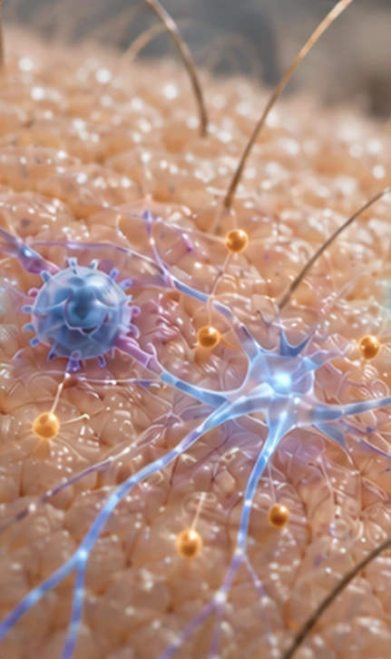
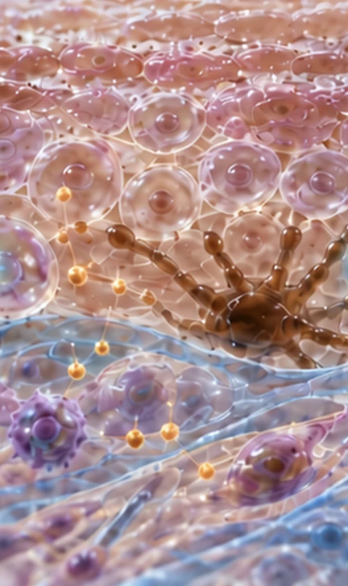
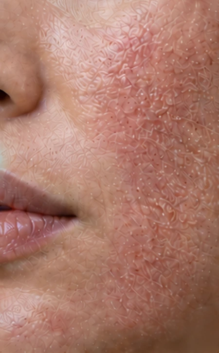
個人のエクスポソームに含まれるストレス要因が、生物学的な信号に変わる仕組み
個人のエクスポソームに含まれるストレス要因は、連携する神経・内分泌・神経免疫の経路を活性化し、全身と皮膚へストレスの信号を伝えます。
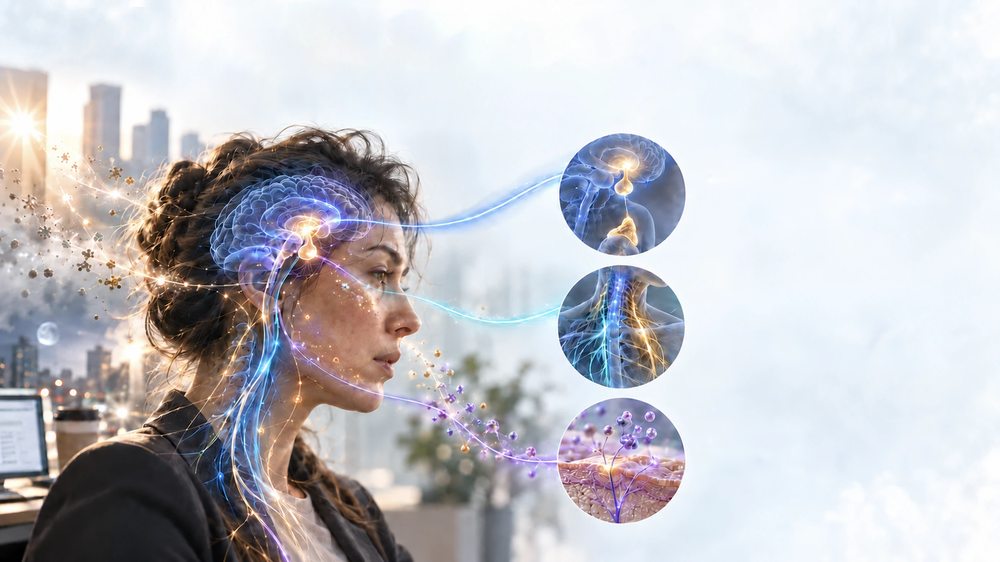
視床下部 → CRH → 下垂体 → ACTH → 副腎皮質 → コルチゾール
交感神経の活性化・副交感神経による調節
サブスタンスP・CGRP・VIP・NPY
神経・免疫・内分泌の信号が皮膚で集まるところ
皮膚は、感覚神経、免疫細胞、局所の内分泌経路が絶えず情報をやり取りし、ストレスに反応する、統合された信号伝達ネットワークとして機能します。
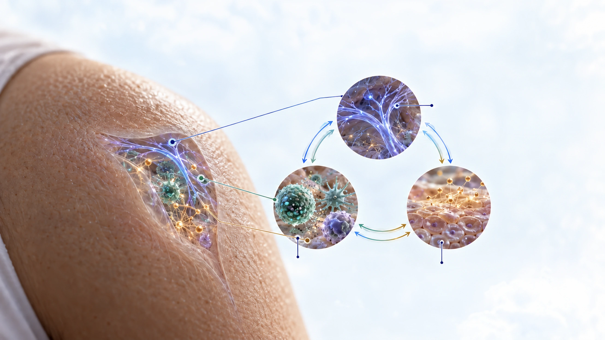
感覚受容体・神経線維・神経ペプチド
マスト細胞・マクロファージ・樹状細胞・サイトカイン
局所のHPA様軸・CRH・ACTH様ペプチド・コルチゾール
ストレスの信号が皮膚細胞の働きを変える仕組み
神経・免疫・内分泌からのストレス信号は、複数の皮膚細胞群の働きを変え、皮膚の恒常性を維持するための協調した機能を徐々に弱めます。
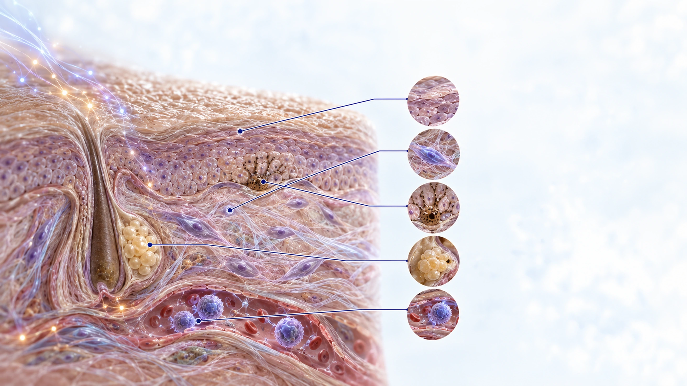
分化の障害・バリアの再生低下
コラーゲンとエラスチン ↓・MMP活性 ↑
色素形成の信号伝達の変化
皮脂産生の変化・酸化の増加
炎症 ↑・血管反応性 ↑
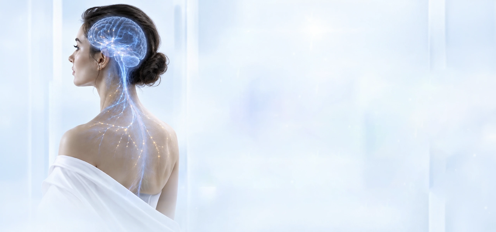
絶えず続くフィードバックループ
脳と皮膚は、神経・内分泌・免疫の信号を通じて絶えず情報をやり取りしています。
中枢神経系からのストレスに関する信号は皮膚の反応に影響を与え、
皮膚で生まれた感覚や炎症の信号は脳へと戻ります。
この双方向のフィードバックは恒常性を保つこともあれば、
ストレスが長引くと、その乱れに関わることもあります。
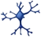
感覚信号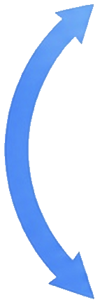
脳（CNS）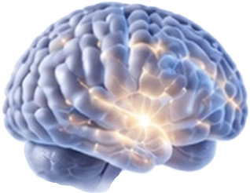
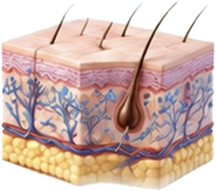
皮膚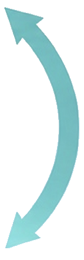
今日も、明日も
健やかな肌のための
科学
A&Sの統合研究フレームワーク
脳–皮膚軸の双方向の情報伝達を示す、統合的なシステムモデル。
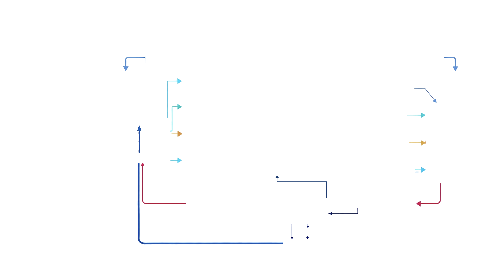
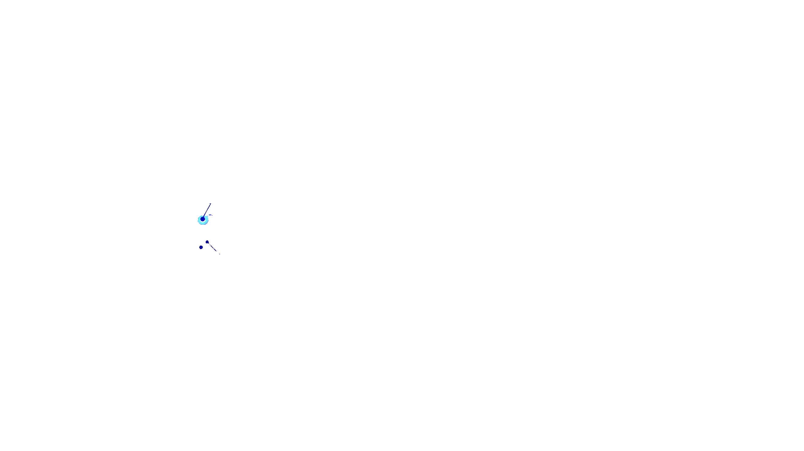
環境 | 心理 | 生活習慣 | 身体
中枢と末梢の
ストレス反応系を活性化
中枢での情報処理と
ストレス情報の統合
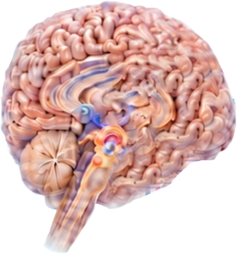
ドーパミン
セロトニン
オキシトシン
グルタミン酸
GABA
感情
ストレス反応
神経内分泌の調節
末梢の反応と
恒常性
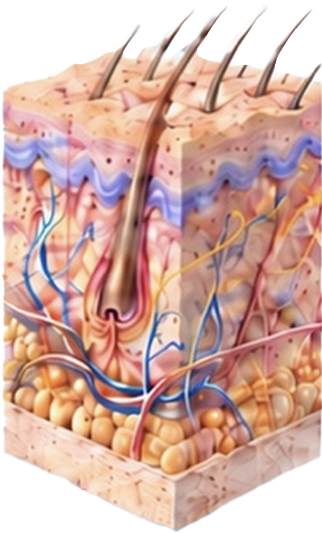
バリア機能
色素形成
免疫調節
感覚信号の伝達
ニューロン、マスト細胞、
NK細胞、好中球
ヒスタミン
サブスタンスP（SP）
炎症性サイトカイン
アセチルコリン（ACh） 増加
皮膚のPOMCは、色素形成経路のα-MSHにつながります。皮膚のCRHは、ここに示す神経免疫細胞を通じて、ヒスタミンを介して、または直接サブスタンスPへ信号を伝えます。サブスタンスPは脳へフィードバックされます。
外的・内的なストレス要因は皮膚細胞に直接作用し、分子レベルの信号を発生させ、皮膚の機能と見た目を徐々に変えていきます。
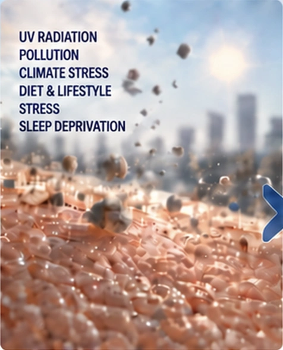
ケラチノサイト・線維芽細胞・
マスト細胞・感覚神経終末・
メラノサイト・免疫細胞
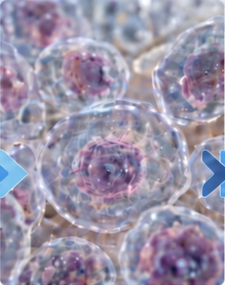
NF-κB・MAPK・JAK/STAT・
NLRP3・ROS・Ca2+
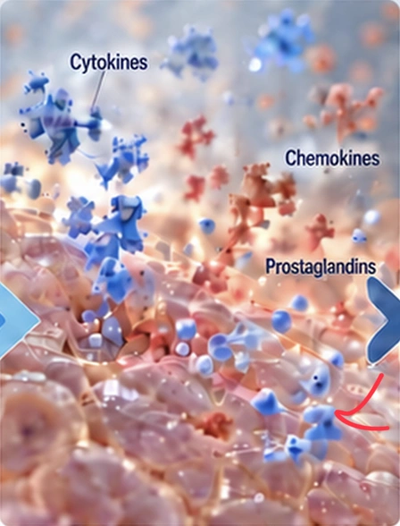
サイトカイン・ケモカイン・
神経ペプチド・MMPs・
ヒスタミン・プロスタグランジン
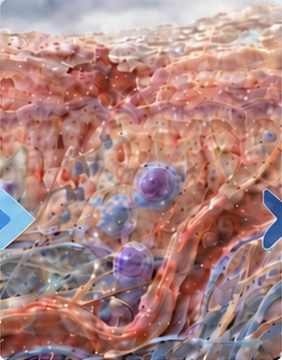
バリア損傷・炎症・
酸化ストレス・ECMの分解・
血管のバランスの乱れ・
マイクロバイオームの異常
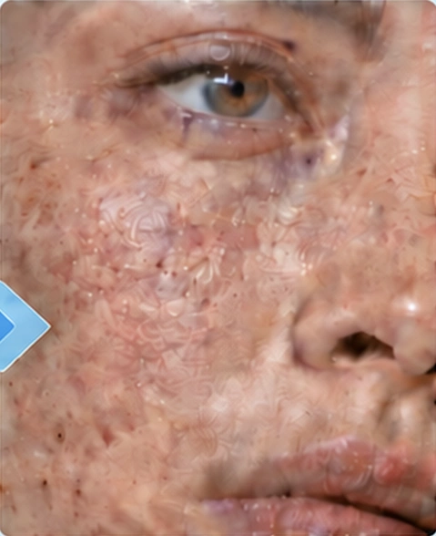
乾燥・敏感さ・かゆみ・
にきび・皮膚炎・色素沈着・
治癒の遅れ・皮膚の老化
脳と皮膚の情報伝達の科学
A&Sは、エクスポソーム、皮膚–脳軸、皮膚バリアの生物学への理解をもとに、
皮膚と脳の情報伝達に関する科学を、ニューロコスメティクスの戦略へどう生かすかを探究しています。
特定のリガンドが
皮膚細胞の神経系受容体に結合し、
信号を発生させます。
結合により細胞内の
連鎖反応が始まり、外部からの信号が
内部の反応に変換されます。
信号は、コラーゲン産生の増加、
水分保持の改善、
バリア機能の強化など、
細胞の好ましい変化につながります。
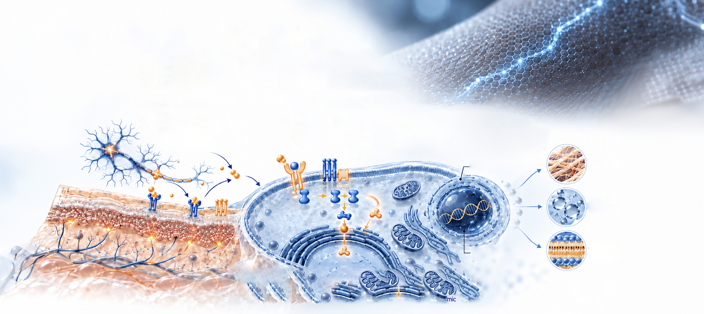
皮膚細胞 細胞核 小胞体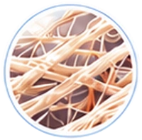
コラーゲンの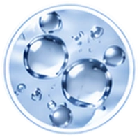
水分保持の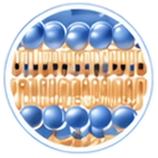
バリア機能の